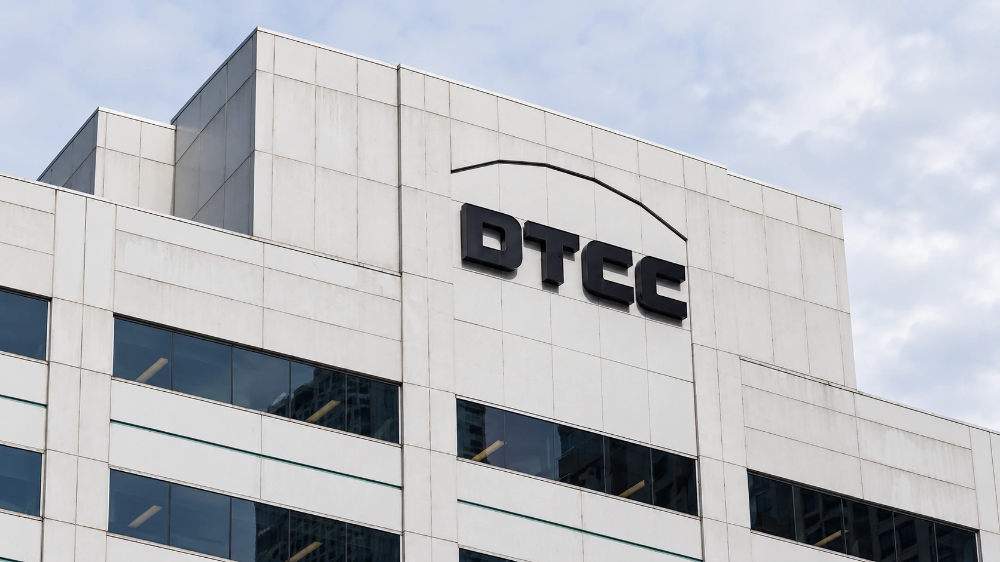

Wall Street’s DTCC Launches Tokenized Securities Service
The market infrastructure group’s service is live on Canton and its private Besu network. Eligible asset value is distinct from tokens issued.

DTCC, a central part of the infrastructure behind U.S. securities markets, launched a service Wednesday that lets eligible financial firms hold representations of existing securities on blockchain networks. The DTCC Tokenization Service is operating on Canton and DTCC's private Besu network. The launch connects digital transfers to securities already held at its Depository Trust Company subsidiary, rather than creating a new unbacked asset.
DTCC said 20 participants had signed access agreements. Its product page lists 34 securities available to tokenize at launch, backed one-for-one by assets held at DTC. CoinDesk reported, citing a DTCC spokesperson, that the eligible securities represent approximately $30 trillion in market value. That is the value of the underlying eligible pool, not a disclosure that $30 trillion has already been converted into tokens.
The distinction is central to assessing adoption. A large pool gives the service room to grow, while actual issuance and repeated transfers show how much firms use it. Wednesday's launch materials establish availability and institutional participation. They do not provide a comparable headline figure for tokenized balances already outstanding.
The claim remains tied to an existing security
A token records an entitlement associated with a security in custody. DTCC says the digital form retains the legal rights, economic interests and protections of the underlying asset. The service supports around-the-clock transfers between DTC-registered wallets. It does not follow that an investor can send a share to any anonymous wallet or trade every listed security continuously on a public exchange.
The structure differs from a product that merely tracks a stock's price. Rights, custody and access conditions matter alongside the technology used to move a token. TTN's report on issuer objections to a separate stock-token plan examines why companies and investors distinguish exposure to a price from the rights attached to the underlying shares.
Connecting a token to established securities records also changes the operational question. A transfer must leave a clear answer about who holds the entitlement and which system maintains the relevant record. Faster movement is useful only if reconciliation, corporate actions and controls remain dependable. A blockchain entry alone does not remove those obligations.
The regulatory framework has defined limits
The December 2025 SEC staff no-action letter describes a pilot framework for DTC participants. It sets out registered-wallet requirements, mechanisms for converting entitlements into tokens and back again, and tracking through DTC's LedgerScan system. The underlying securities remain registered in the name of DTC's nominee, Cede & Co. Moving a token does not require the issuer to create an additional share.
The letter also describes controls intended to prevent the same security from being transferred twice, along with procedures to address erroneous entries, lost tokens or wrongdoing. This is a controlled institutional arrangement. The existence of those interventions is an important part of understanding the product, especially for readers accustomed to blockchain transfers being described as irreversible.
Staff no-action relief is specific to the facts and conditions in the request; it should not be read as approval of every tokenized-security business model. The pilot letter also says the tokenized entitlements receive no collateral or settlement value in DTC's own specified risk calculations. That provision is separate from the broader possibility that firms develop uses for tokenized collateral.
Live infrastructure precedes proof of scale
DTCC plans to add more networks in 2027. Those additions remain future steps, distinct from Wednesday's Canton and private Besu availability. Our coverage of a separate digital fund launch illustrates the same need to distinguish an operating product, its eligible customers and later expansion plans.
The practical opportunity is to reduce friction when institutions move securities and arrange financing. The evidence needed to judge that opportunity will include actual tokenized balances, transfer activity, dependable conversion and integration with cash payments. Wednesday moves DTCC's program into a live service, but the size of the eligible market and the number of access agreements remain starting conditions rather than proof of achieved liquidity.
Sources and methodology
Sources checked October 28, 2026. Official decisions, company statements and reported findings are attributed in the text. Financial and operational implications are TTN editorial analysis.
- DTCC: October 28 service launch, participants and supported networks
- DTCC: current service specifications and launch eligibility
- DTCC: tokenization resource hub and voluntary participation framework
- SEC staff: December 11, 2025 no-action letter and attached DTC request
- CoinDesk: October 28 launch reporting and attributed eligible-asset valuation